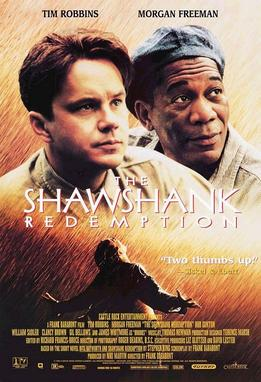
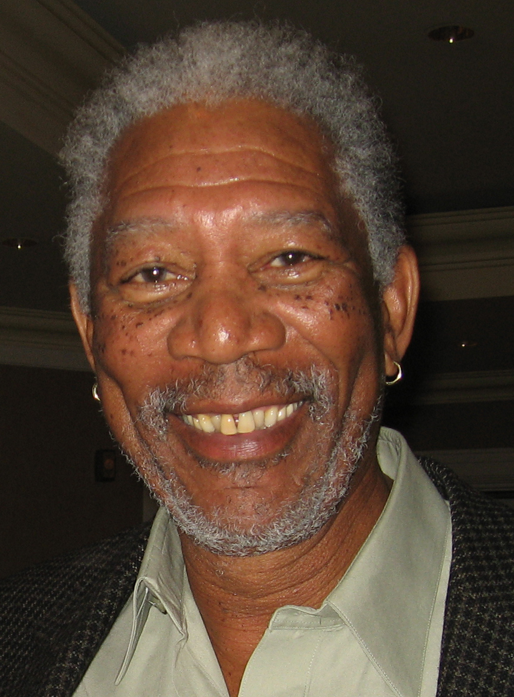

简介
《肖申克的救赎》（英语：The Shawshank Redemption，香港译《月黑高飞》，台湾译《刺激1995》）是1994年的美国剧情片，由弗兰克·德拉邦特编剧并导演，根据斯蒂芬·金1982年中篇小说《丽塔海华丝与肖申克监狱的救赎》改编。影片讲述银行家安迪·杜弗伦（蒂姆·罗宾斯）因涉嫌谋杀夫人及其情夫被判无期徒刑，进入肖申克州立监狱服刑后，他与能为狱友走私各种违禁商品的埃利斯·“瑞德”·雷丁（摩根·弗里曼）成为朋友，同时利用金融才能为典狱长塞缪尔·诺顿（鲍勃·冈顿）等监狱官员和看守洗钱逃税的故事。
剧情
- 1947年，缅因州波特兰法庭裁定银行家安迪·杜弗伦（Andy Dufresne，蒂姆·罗宾斯饰）谋杀夫人及其情夫罪名成立，判处两个无期徒刑。
- 1949年，安迪在做工时听到警卫队长拜伦·哈德利（Byron Hadley）抱怨政府征收的遗产税，于是主动上前提议帮他合法避税
- 1954年，已服刑50年的布鲁克斯获得假释，但他对外界生活无所适从，最终上吊自杀。
- 1963年，诺顿开始动用监狱劳工承包公共工程，利用低廉的用工成本并收受回扣大发横财。
- 1965年，汤米·威廉姆斯（Tommy Williams）因盗窃入狱并与安迪和瑞德成为朋友，安迪还帮他取得普通教育发展证书。次日，安迪成功越狱。
- 1966年，服刑40年的瑞德终获假释。
演员
- 蒂姆·罗宾斯饰安迪·杜弗伦：1947年因涉嫌谋杀夫人及其情夫被判无期徒刑的银行家。
- 摩根·弗里曼饰埃利斯·“瑞德”·雷丁：安迪的朋友，同样因谋杀被判无期徒刑，有门路向狱友走私违禁商品。
- 鲍勃·冈顿（Bob Gunton）饰塞缪尔·诺顿：肖申克监狱典狱长，为人虔诚但又残忍。
- 威廉·托马斯·桑德勒饰海伍德（Heywood）：瑞德团伙一员，同样被判长期入狱。
- 克兰西·布朗饰拜伦·哈德利：监狱警卫队长，为人残酷。
- 吉尔·贝罗斯饰汤米·威廉姆斯：965年因盗窃入狱的青年犯人。
- 詹姆斯·惠特摩（James Whitmore）饰布鲁克斯·哈特伦：20世纪初入狱的老犯人，在监狱图书馆工作。
基本资料
| 电影信息 |
|---|
| 导演 | 弗兰克·德拉邦特 |
| 监制 | 妮基·马文 |
| 编剧 | 弗兰克·德拉邦特 |
| 斯蒂芬·金 |
| 剧本 | 弗兰克·德拉邦特 |
| 原著 | 《丽塔海华丝与肖申克监狱的救赎》斯蒂芬·金作品 |
| 主演 | 蒂姆·罗宾斯 |
| 摩根·弗里曼 |
| 鲍勃·冈顿 |
| 威廉·托马斯·桑德勒 |
| 克兰西·布朗 |
| 吉尔·贝罗斯 |
| 詹姆斯·惠特摩 |
| 配乐 | 托马斯·纽曼 |
| 摄影 | 罗杰·迪金斯 |
| 剪辑 | 理查德·弗朗西斯-布鲁斯 |
| 制片商 | 城堡石娱乐公司 |
| 片长 | 142分钟 |
| 产地 | 美国 |
| 语言 | 英语 |
剧照


《肖申克的救赎》上映后获得普遍好评。部分影评人将本片与《阿尔卡特兹的养鸟人》、《飞越疯人院》、《铁窗喋血》，以及《牢狱大暴动》（Riot in Cell Block 11）等广受好评的监狱或类监狱题材剧情片相提并论。吉恩·西斯克（Gene Siskel）称，《肖申克的救赎》就像《飞越疯人院》一样，都是讲述对抗霸道威权的励志电影。